Handbuch · Qualitative Analyse mit Ollama
Dieses Handbuch begleitet dich vom ersten Start bis zum erneuten Analyselauf mit geprüften Codierungen. Alle Personen, Texte und Beurteilungen in den Beispielen sind erfunden. Stand: 0.3.3 · Ollama-Speicherschätzung (Beta).
Du erreichst die bebilderte Fassung jederzeit über Handbuch neben Telegram-Updates in der Seitenleiste. Sie öffnet sich in einem eigenen Tab, damit deine aktuelle Arbeit geöffnet bleibt. Ohne laufende Oberfläche kannst du docs/HANDBUCH.html doppelklicken. Den Programmordner einschließlich der Bilder zusammenlassen.
1. Einrichten und starten
- Das vollständige Programm von GitHub herunterladen und entpacken. Einzelne Python-Dateien reichen nicht aus.
- Python ab Version 3.10 und Ollama installieren. Ein lokales Modell in Ollama bereitstellen; dessen Namen anschließend in der Oberfläche eintragen. Der Speicherbedarf hängt vom Modell und vom Kontextfenster ab.
- Unter Windows einmal
Einrichtung.cmdstarten. Der Schritt installiert Python-Pakete und benötigt Internet, führt aber keine Interviewanalyse aus. Start_Oberflaeche.cmdöffnen. Die Bedienung erfolgt im Browser; das Startfenster während eines Laufs geöffnet lassen.- Unter Analyse → Systemprüfung ohne Modellaufruf die Einrichtung prüfen. Kurzen Modelltest vorbereiten ist eine getrennte, optionale Aktion, die eine künstliche Anfrage beim gewählten Anbieter ausführt.
Die Standardkonfiguration verwendet lokales Ollama. Optional lassen sich Cloud-Anbieter je Projekt freigeben; die Datenfreigabe wird im folgenden Abschnitt erklärt. Für eine reine Cloud-Nutzung ist kein lokales Modell nötig. Die API-Zugangsdatei gehört weder ins Repository noch in Beispielprojekte.
Speicher und parallele Anfragen
Unter Analyse → Speicher und parallele Anfragen erscheint nach Wahl eines lokalen Ollama-Modells automatisch eine Schätzung. Änderungen am Kontextfenster lösen eine neue Prüfung aus. Speicherschätzung aktualisieren liest eine neue Momentaufnahme ein, etwa wenn ein anderes GPU-Programm beendet wurde. Es werden keine Modelle geladen, entladen oder Testtexte gesendet.
Die Anzeige nennt beispielsweise „Speicherschätzung: bis zu 3 gleichzeitige Anfragen“, das gewählte Kontextfenster sowie freien VRAM je NVIDIA-GPU und verfügbaren RAM. Das folgende Bild verwendet simulierte Hardware- und Modellwerte, keine Messung eines bestimmten PCs.
Die Schätzung prüft 1 bis 8 Anfragen für vollständig auf GPUs geladene Modelle. Sie berücksichtigt Modellgröße, Kontextcache in f16 und Reserven. Mehr Kontext oder andere GPU-Belegung kann die Zahl verringern. CPU-Auslagerung, AMD und Apple werden nicht geschätzt. Bei fehlenden Modelldaten, nicht unterstützten Architekturen oder einem bereits geladenen Modell erscheint eine Erklärung statt einer ungesicherten Zahl. Ein Wert von 0 bedeutet nur, dass mit der aktuellen Belegung und den Reserven keine reine GPU-Ausführung abgeschätzt werden kann.
Die Zahl aktiviert keine Parallelität. Ollamas Servereinstellung OLLAMA_NUM_PARALLEL und die tatsächliche GPU-Verteilung sind nicht über die verwendete API auslesbar. Die Anwendung muss außerdem unabhängige Anfragen gleichzeitig senden; bisher serielle Module werden durch diese Anzeige nicht beschleunigt. Die Prüfung verändert keine Servereinstellungen und unterbricht keine laufende Analyse. Vor produktiver Nutzung einer höheren Parallelität ist ein separater Test sinnvoll.
Grundlagen: Ollama: parallele Anfragen und Speicher, Modellmetadaten.
2. Zuerst die Demo kennenlernen
Auf der Startseite Künstliche Beispieldaten laden wählen. Das erzeugt ein eigenes Projekt mit 50 Codierzeilen, 43 Passagen und sechs erfundenen Personen. Das Laden sowie die Eingabeprüfung benötigen kein LLM. Unter Eingaben prüfen die Spalten kontrollieren und Einstellungen speichern & Eingaben prüfen anklicken. Bei Erfolg erscheinen die Zahlen für Codierzeilen, Passagen, Personen und Codepfade.
Für eine überschaubare erste Analyse unter Analyse → Auswahl leeren nur Clusteranalyse auswählen. Module mit Abhängigkeiten können weitere Vorstufen hinzufügen; die Zusammenfassung unter den Häkchen zeigt die tatsächlich ausgeführten Schritte. Erst Prüfen & neuen Lauf starten führt die Modellauswertung aus.
3. Eigenes Projekt und MAXQDA-Dateien
＋ Neues Projekt wählen, benennen und zwei Dateien laden: Interviewdatei sowie Kategoriensystem. Du kannst .xlsx und .csv mischen. Jede Datei darf maximal 20 MB groß sein. Das Programm legt Arbeitskopien an und verändert die ausgewählten Originaldateien nicht.
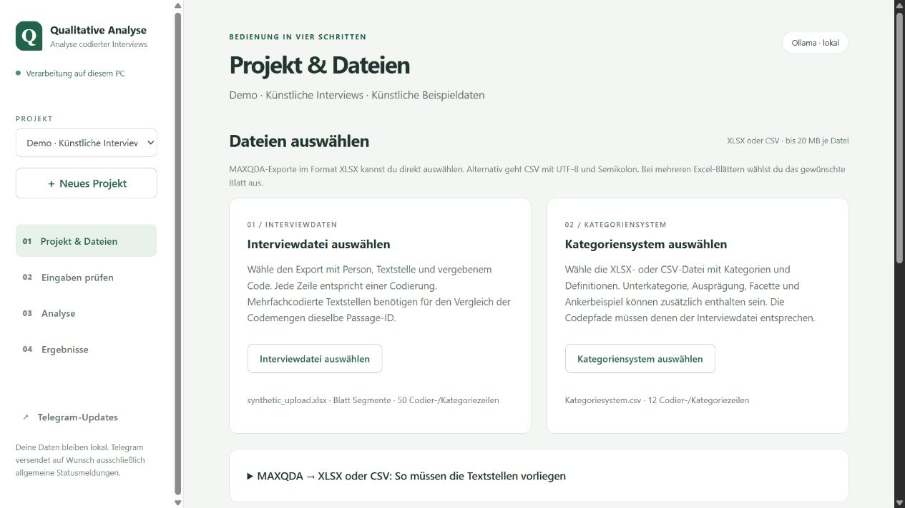
Textstellen direkt aus MAXQDA exportieren
In MAXQDA die Übersicht/Liste der codierten Segmente öffnen und als Excel-Tabelle exportieren. Benötigt wird die Tabelle mit den tatsächlichen Textstellen, nicht nur das Codesystem mit Codenamen. Behalte nach Möglichkeit auch Dokumentgruppe, Anfang und Ende im Export. Die Schaltflächen und Menünamen können je nach MAXQDA-Version abweichen.
Die XLSX-Datei direkt bei Interviewdatei auswählen laden. Bei mehreren Tabellenblättern das Datenblatt mit Kopfzeile auswählen; die Blätter werden nicht zusammengeführt. Falls du die Tabelle nach Excel kopiert hast, muss sie dieselbe Struktur haben: eindeutige Spaltenüberschriften in Zeile 1, keine Titelzeilen darüber, keine verbundenen Zellen und keine leeren Fortsetzungszeilen anstelle von Dokumentnamen. Formeln in einer Kopie durch Werte ersetzen.
CSV geht weiterhin: als UTF-8 mit Semikolon speichern. Zeilenumbrüche innerhalb einer Textstelle müssen in derselben Zelle bleiben; Excel setzt beim CSV-Export die nötigen Anführungszeichen.
| Feld | Beispiel | Zuordnung |
|---|---|---|
| Dokumentname | Interview_01 | Person / Dokument |
| Code | Lernangebot > Praxis > Übung | Vergebener Code |
| Segment | Die gemeinsame Übung half mir beim Anwenden. | Text / Segment |
| Anfang, Ende | 12, 12 | Automatisch für Passage-Vorschläge erkannt |
| Dokumentgruppe | Gruppe_A | Automatisch zur Trennung der Vorschläge verwendet |
| segment_id | Z001 | Optional: ohne Spalte automatisch erzeugt |
| PassageID | P001 | Vorhandene ID verwenden oder vorbereiten lassen |
Jede Zeile enthält eine Codierung. Bei mehreren Codes für dieselbe Textstelle gibt es mehrere Zeilen. Codepfade verwenden > zwischen den Ebenen. Mehrere Codes in einer Sammelzelle werden nicht automatisch aufgeteilt. Dokument-/Personenkennungen müssen im Projekt eindeutig sein; gleich benannte Dokumente aus unterschiedlichen Gruppen sollten vorher unterscheidbare Namen erhalten.
Kategoriensystem vorbereiten
Die separate Tabelle braucht mindestens Code / vollständiger Codepfad oder Kategorie sowie Definition. Optional sind Unterkategorie, Ausprägung, Facette, Ankerbeispiele, Einschlussregeln, Ausschlussregeln und Abgrenzung / weitere Codierhinweise. Jede Zeile beschreibt einen vollständigen Codepfad. Höhere Ebenen je Zeile wiederholen; nicht benötigte tiefere Ebenen bleiben leer.
| Kategorie | Unterkategorie | Ausprägung | Definition | Ankerbeispiel |
|---|---|---|---|---|
| Lernangebot | Praxis | Übung | Aussagen über das eigene praktische Erproben. | Ich konnte das Verfahren selbst ausprobieren. |
| Zusammenarbeit | Gruppe | Austausch | Aussagen über gegenseitige fachliche Hilfe. | Die Erklärung eines anderen Teilnehmers half mir. |
Nach dem CSV-Import (UTF-8, Semikolon) öffnet sich die Vorschau der ersten fünf Zeilen. Direkt über der Spaltenzuordnung unter Eingaben prüfen wird dieselbe CSV-Vorschau mit Originalüberschriften und den ersten fünf Zeilen angezeigt. Lange Zelltexte werden nur in der Vorschau auf 500 Zeichen begrenzt. Wähle dort selbst aus, welche Quellspalte zu welchem Feld gehört. Die Überschriften müssen nicht den Feldnamen im Programm entsprechen. Nicht vorhandene optionale Felder bleiben Nicht zugeordnet. Gespeicherte Zuordnungen werden wiederhergestellt; bei einer neu hochgeladenen Datei beginnt deren Zuordnung erneut.
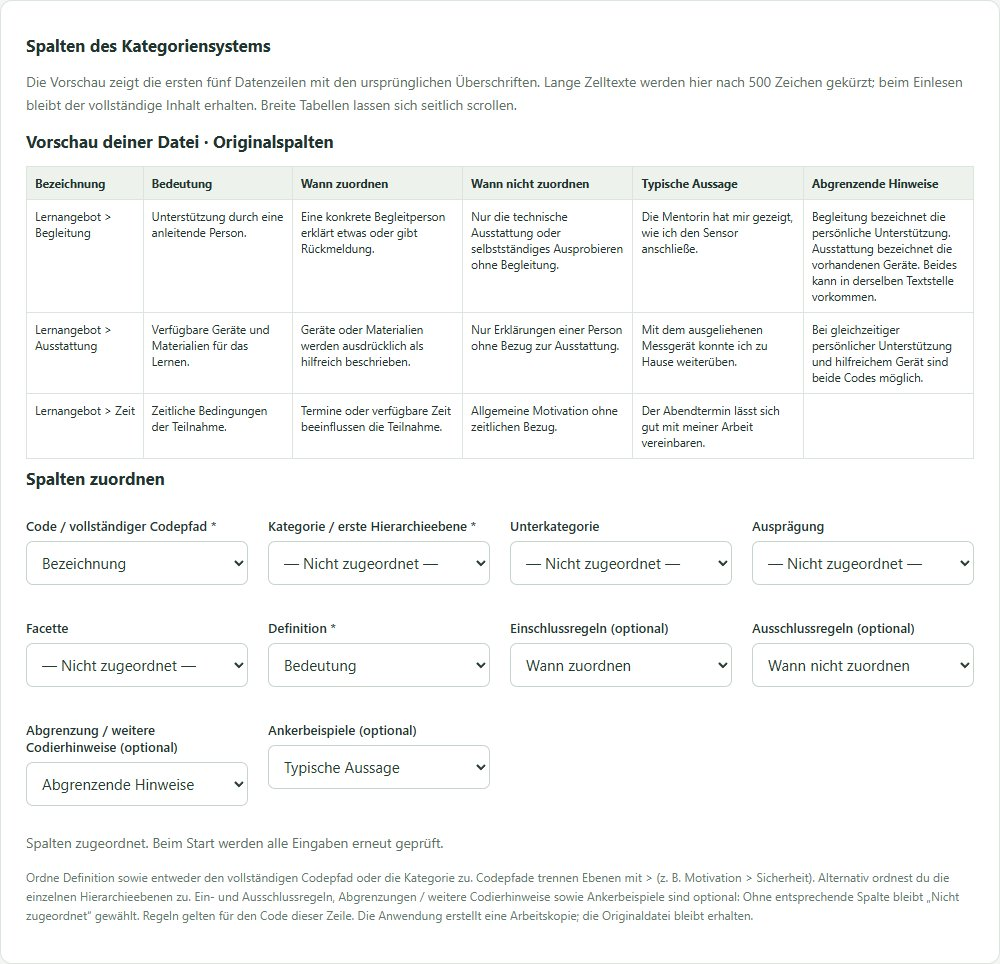
| Feld im Programm | Beispiel für eine Überschrift in deiner Datei | Erforderlich |
|---|---|---|
| Code / vollständiger Codepfad | Bezeichnung | Codepfad oder Kategorie |
| Kategorie | Hauptkategorie | Kategorie oder Codepfad |
| Definition | Bedeutung | Ja |
| Einschlussregeln | Wann zuordnen | Nein |
| Ausschlussregeln | Wann nicht zuordnen | Nein |
| Ankerbeispiele | Typische Aussage | Nein |
| Abgrenzung / weitere Codierhinweise | Abgrenzende Hinweise | Nein |
Ein vollständiger Codepfad verwendet > zwischen bis zu vier Ebenen, beispielsweise Lernangebot > Begleitung. Alternativ wählst du Kategorie und die benötigten Hierarchiespalten. Wenn du beides zuordnest, müssen die Pfade übereinstimmen. Jede Quellspalte darf nur einmal zugeordnet werden. Zusätzliche, nicht zugeordnete Spalten fließen nicht in die Analyse ein.
Fehlt Code/Kategorie oder Definition, bleibt Prüfen & neuen Lauf starten gesperrt. Die Meldung benennt die fehlende Zuordnung. Einstellungen speichern & Eingaben prüfen kontrolliert zusätzlich die vollständige Datei und die Codepfade. Bei Erfolg zeigt die Oberfläche, wie viele Codes Ein-/Ausschlussregeln, weitere Codierhinweise und Ankerbeispiele enthalten. Auch beim Start werden die Eingaben erneut geprüft, bevor Modellanfragen möglich sind.
Die Regeln werden bei Blindcodierung und Codeprüfung berücksichtigt. Einschlussregeln beschreiben, wann der Code zutrifft; Ausschlussregeln grenzen ihn ab. Leere Felder bedeuten keine zusätzlichen Regeln. Ankerbeispiele illustrieren die Bedeutung. Regeln gelten für den Code ihrer Zeile und werden nicht automatisch an Untercodes vererbt. Benötigte übergeordnete Regeln daher ausdrücklich in den betroffenen Zeilen aufführen. Regeländerungen erscheinen im Kategorienvergleich und bleiben in Folgeläufen erhalten. Alte Ergebnisdateien ändern sich dadurch nicht.
Das vollständige Demo-Codebuch enthält Ein-/Ausschlussregeln und Abgrenzungen für alle zwölf Codes und passt zu den 50 mitgelieferten Codierzeilen. In einem neu angelegten Demo-Projekt sind diese Standardspalten bereits zugeordnet. Bestehende Projekte behalten ihre bisherigen Eingabekopien.
Das künstliche CSV-Formatbeispiel verwendet bewusst andere Überschriften. Es ist ein eigenständiges Beispiel und passt nicht zu allen Codes des allgemeinen Demo-Interviews. CSV-Felder mit Semikolon, Anführungszeichen oder Zeilenumbrüchen müssen korrekt in Anführungszeichen gesetzt sein; Excel übernimmt das beim CSV-Export. Tabellen aus Word mit verbundenen Zellen müssen vorher in eine Zeile je vollständigem Codepfad überführt werden. Regeln oder Differenzierungen, die in Word als Absätze hinter der Tabelle stehen, müssen vor dem CSV-Export in eigene Spalten beim zugehörigen Code übertragen werden. Sie werden nicht aus dem Begleittext erraten. Der Programmimport akzeptiert weiterhin CSV und XLSX, keine DOCX-Dateien.
Die Definition legt die inhaltliche Bedeutung fest. Ein Beispiel illustriert sie. Offene redaktionelle Notizen wie „überlegen“ gehören nicht unbeabsichtigt in Codepfade. Das Programm muss jeden Code aus der Interviewdatei im Kategoriensystem wiederfinden.
4. IDs ohne händisches Nummerieren
Zeilen-IDs entstehen bereits automatisch, wenn keine ID-Spalte vorhanden ist. Vorhandene eindeutige IDs können zugeordnet bleiben. Sie kennzeichnen einzelne Codierzeilen, auch wenn derselbe Text mehrfach codiert wurde.
Eine Passage-ID verbindet dagegen die Codierzeilen derselben tatsächlichen Textstelle. Für diese Zuordnung gibt es unter Eingaben prüfen → Passage-IDs vorbereiten einen Assistenten:
- Person/Dokument, Text und Code zuordnen. Die Passage-ID zunächst nicht zuordnen, wenn sie fehlt.
- Passage-IDs vorbereiten anklicken. Das Programm vergleicht Dokumentgruppe, Dokumentname, Anfang, Ende und den exakten Segmenttext. Es verwendet kein LLM und keine Ähnlichkeitssuche.
- Die vorgeschlagenen Gruppen prüfen. Nur Gruppen anhaken, die dieselbe tatsächliche Textstelle abbilden. Bei vielen Vorschlägen mit Weitere Gruppen weitergehen; gesetzte Häkchen bleiben erhalten.
- IDs mit dieser Gruppierung erstellen wählen. Alle Zeilen erhalten automatisch IDs in einer neuen Arbeitskopie. Bestätigte Gruppen teilen eine Passage-ID; nicht bestätigte Zeilen bleiben getrennt. Keine Zeile wird gelöscht. Die Oberfläche ordnet die neuen Spalten zu und wählt den Mehrfachvergleich.
- Anschließend Einstellungen speichern & Eingaben prüfen anklicken.
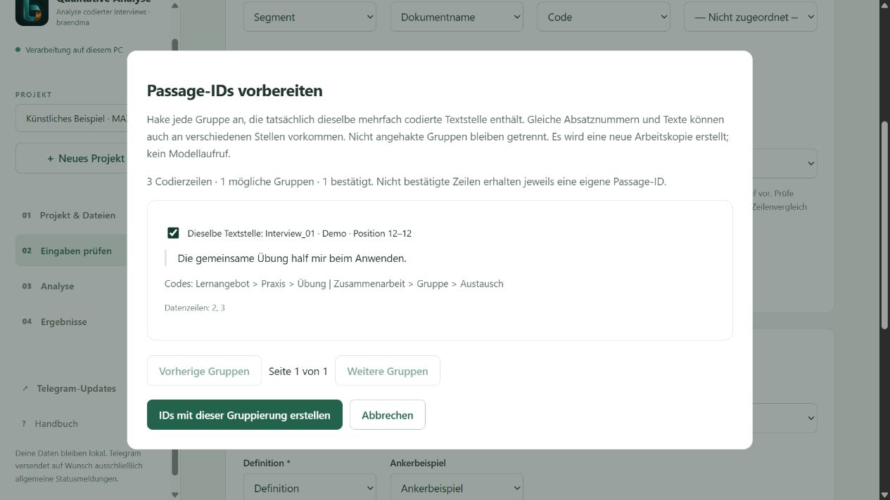
Warum kurz prüfen? Bei Textdokumenten sind Anfang und Ende in MAXQDA Absatznummern. Derselbe kurze Satz kann innerhalb eines Absatzes mehrfach vorkommen. Daher beweisen selbst identische Positionen und Texte keine eindeutige gemeinsame Zeichenposition. Die endgültige Gruppierung wird bewusst bestätigt. Bei Unsicherheit den Zeilenvergleich verwenden; dieser benötigt keine Passage-ID. Quelle: MAXQDA: Übersicht codierter Segmente.
Beispiel: Zwei Zeilen aus Interview_01, Absatz 12, mit genau demselben Text und den Codes „Übung“ und „Austausch“ können eine Passage bilden. Derselbe Wortlaut in Interview_02 oder Absatz 30 wird nicht vorgeschlagen. Überlappende Ausschnitte mit unterschiedlichem Text bleiben ebenfalls getrennt. Bestehende Passage-IDs werden vom Assistenten nicht überschrieben.
5. Spalten und Untersuchung prüfen
Unter Projekt & Dateien die Beschreibung der Studie, Teilnehmende und Methodik ausfüllen. Diese Angaben werden später dem Modell mitgegeben. Unter Eingaben prüfen alle Spalten kontrollieren; nicht vorhandene optionale Ebenen als Nicht zugeordnet belassen.
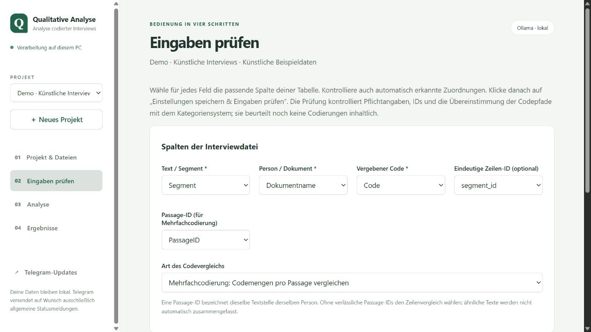
Die Eingabeprüfung kontrolliert Pflichtfelder, IDs und Codepfade. Sie bewertet noch nicht die fachliche Qualität einer Codierung. Bei Fehlern steht beispielsweise, welche Spalte oder welcher Code fehlt. Nach jeder Änderung erneut prüfen. Ein früherer grüner Prüfbefund gilt nicht für geänderte Eingaben.
Mit Kategorienversionen vergleichen lassen sich eine vorher gültige und die aktuelle Tabelle gegenüberstellen. Die Ansicht nennt neue, entfernte und geänderte Kategorien sowie betroffene Codierzeilen. Sie codiert nichts automatisch um.
6. Module auswählen
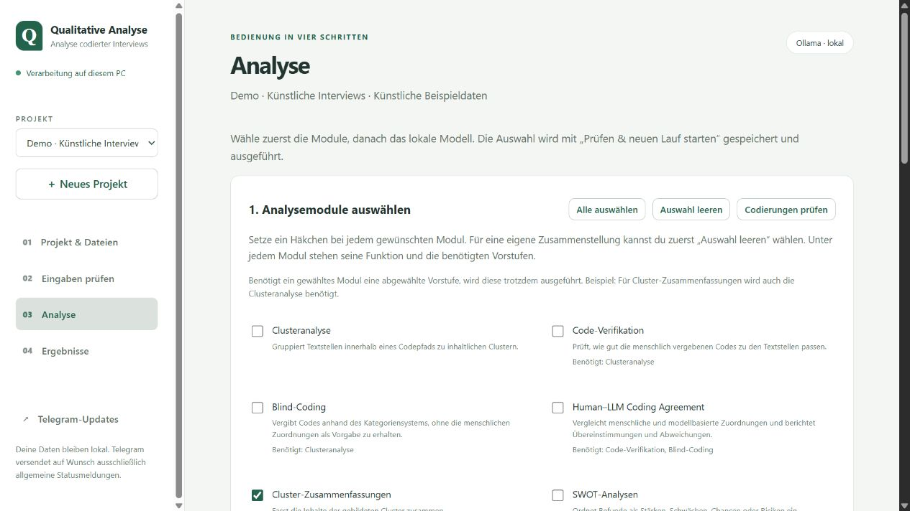
| Modul | Nutzen |
|---|---|
| Clusteranalyse | Gruppiert Inhalte innerhalb eines Codepfads. |
| Code-Verifikation | Prüft die vorhandene menschliche Zuordnung. |
| Blindcodierung | Codiert anhand des Kategoriensystems ohne Vorgabe des menschlichen Codes. |
| Coding Agreement | Vergleicht Zuordnungen rechnerisch, einschließlich Abweichungen. |
| Cluster-Zusammenfassungen | Fasst Cluster inhaltlich zusammen. |
| SWOT und Meta-SWOT | Ordnet und verdichtet Stärken, Schwächen, Chancen und Risiken. |
| Personenanalyse und Personenvergleich | Untersucht einzelne Personen sowie Gemeinsamkeiten und Unterschiede. |
| Kontrast-, Relations- und Ambivalenzanalyse | Sucht Gegenfälle, Zusammenhänge und gegenläufige Aussagen. |
| Evidenz-Audit | Prüft Befunde auf vorhandene Gegenbelege. |
| Prüfliste | Stellt Fälle für die menschliche Nachprüfung zusammen. |
| Gesamtsynthese | Führt vorgelagerte Befunde zusammen. |
Die Oberfläche zeigt die genaue Bezeichnung und benötigte Vorstufen unter jedem Häkchen. Nicht jeder Schritt passt zu jeder Fragestellung. Codierungen prüfen stellt eine Auswahl zur Validierung zusammen; für die Rückmeldungsfunktion zusätzlich Prüfliste auswählen. Mehr Module können mehr Modellaufrufe und Laufzeit verursachen.
Datenfreigabe, Anbieter und Schlüssel
Unter Analyse → 2. Datenfreigabe und Modell ist DSGVO-relevantes Material · nur lokal verarbeiten zunächst angehakt. Damit sind Cloud-Anbieter gesperrt. Lokales Ollama und ein auf diesem PC installiertes Modell bleiben der Standard.
Für Material, das du an einen Cloud-Dienst übermitteln darfst (zum Beispiel geeignete öffentliche Dokumente oder künstliche Testdaten):
- Das DSGVO-Häkchen abwählen. Die Freigabe gilt für dieses Projekt und wird sofort gespeichert. Sie anonymisiert keine Inhalte und stellt keine datenschutzrechtliche Prüfung dar.
- Ollama Cloud, OpenAI, Anthropic oder Hugging Face wählen. Auch nach Freigabe kann Ollama · lokal weiterverwendet werden.
- Den API-Schlüssel des Anbieters eingeben oder aus einer
.txt-Datei mit einer einzigen Schlüsselzeile laden. Schlüssel speichern anklicken. Ein Chat-Abonnement allein ist kein API-Schlüssel. - Ohne Speicher-Häkchen bleibt der Schlüssel nur bis zum Beenden der Oberfläche verfügbar. Unter Windows kann er optional mit deinem Benutzerkonto verschlüsselt gespeichert werden. Schlüssel entfernen löscht ihn für diesen Anbieter; zum Wechseln einen neuen Schlüssel eingeben und speichern. Andere Anbieter-Schlüssel bleiben erhalten.
- Den exakten Modellnamen aus deinem Anbieter-Konto übernehmen. Bei Cloud wird keine Liste lokaler Modelle verwendet. Optional den kurzen Modelltest ausführen, anschließend Prüfen & neuen Lauf starten.
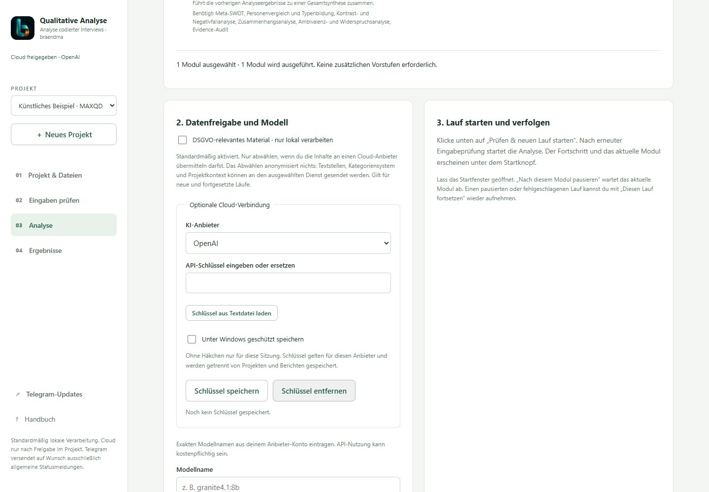
Cloud-Anfragen können Textstellen, Kategoriensystem, Projektkontext und frühere Analyseschritte enthalten und API-Kosten verursachen. Hugging Face kann zu weiteren Inference Providern weiterleiten. Das Programm übergibt keine Schlüssel in Projekt-YAML, Bericht oder Prüfexport. Dauerhafte Schlüssel liegen separat in llm_keys.private.json im Datenverzeichnis der Oberfläche.
Das DSGVO-Häkchen wieder aktivieren, um neue und fortgesetzte Cloud-Läufe zu sperren. Ein bereits laufender Cloud-Lauf muss vorher abgeschlossen oder nach seinem aktuellen Modul pausiert sein. Bereits übermittelte Daten werden dadurch nicht zurückgerufen. Kategorienvorschläge verwenden den Anbieter des Ursprungslaufs und werden ebenfalls durch die aktuelle Projektsperre geschützt. Der Anbieter eines pausierten Laufs bleibt an seine gespeicherte Konfiguration gebunden; für einen Anbieterwechsel einen neuen Lauf starten.
Bei OpenAI, Anthropic und Hugging Face gelten die jeweiligen Modellstandards für Temperatur und Reasoning; die Ollama-Schalter sind dort deaktiviert. Das Kontextfenster ist bei Cloud eine lokale Eingabegrenze und erweitert kein Anbieterlimit. Technische Details und Grenzen.
7. Start, Fortschritt und Wiederaufnahme
Unter Lokales Modell auswählen den installierten Namen eintragen. Installierte Modelle anzeigen fragt nur die Liste ab. Kontextfenster und Antwortlimit zunächst aus der passenden Konfiguration übernehmen. Das Antwortlimit muss kleiner als das Kontextfenster sein; Thinking muss zum Modell passen.
Prüfen & neuen Lauf starten speichert die aktuellen Einstellungen, prüft nochmals und erzeugt einen eigenen Lauf. In der Browseransicht siehst du abgeschlossene Module, das aktuelle Modul und – sofern vom Modul gemeldet – bearbeitete Fälle und Modellantworten. Eine längere Modellantwort kann Zeit beanspruchen, ohne dass die Fallzahl steigt.
Nach diesem Modul pausieren beendet zuerst das laufende Modul. Diesen Lauf fortsetzen verwendet dessen gespeicherte Eingaben und Einstellungen. Ein neuer Lauf verwendet dagegen den aktuellen Projektstand. Erfolgreiche Teilschritte werden bei zulässiger Wiederaufnahme weiterverwendet; geänderte Eingaben oder Programmstände können eine Wiederaufnahme ausschließen. Dann einen neuen Lauf starten und die vorherigen Ergebnisse behalten.
8. Berichte öffnen und später wiederfinden
Unter Ergebnisse bleiben die Läufe des ausgewählten Projekts gespeichert. Nach einem erfolgreichen Abschluss erscheint Interaktiven Bericht öffnen. Der Gesamtbericht enthält die Markdown-Berichtsteile der ausgeführten Module und eingebettete unterstützte Diagramme. Rohdaten, Excel-Exporte und die bearbeitbare Prüfliste werden separat geöffnet.
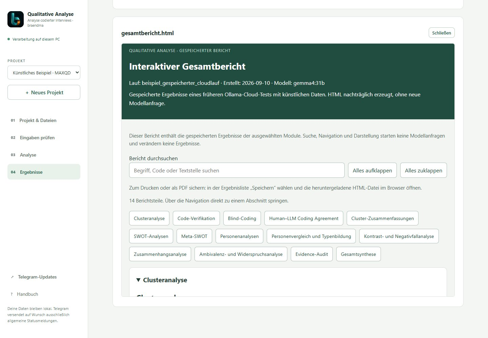
- Bericht durchsuchen: Filtert Berichtsteile nach dem Suchbegriff. Navigation zu einem Abschnitt hebt den Suchfilter auf.
- Alles aufklappen / zuklappen: Steuert die sichtbaren Abschnitte.
- Speichern: Lädt die HTML-Datei herunter. Sie funktioniert offline, einschließlich der eingebetteten Grafiken.
- Drucken / PDF: In der heruntergeladenen HTML-Datei verfügbar. Beim Drucken werden alle Berichtsteile aufgeklappt, auch zuvor ausgefilterte.
Zum späteren Wiederöffnen die Oberfläche starten, dasselbe Projekt auswählen und Ergebnisse öffnen. Es ist kein erneuter Modellaufruf nötig. HTML entsteht nur nach vollständigem erfolgreichem Lauf; bei Fehler oder Pause stehen bereits fertige Einzelergebnisse zur Verfügung. Fehlende oder zu große Grafiken werden im Bericht kenntlich gemacht.
Alte Läufe vor diesem Patch besitzen noch keinen automatisch erzeugten HTML-Gesamtbericht. Fortgeschrittene können ihn ohne LLM nacherstellen: python src/html_report.py --run-dir "Pfad zum abgeschlossenen Lauf". Eine bestehende HTML-Datei bleibt erhalten; ein weiterer Export erhält einen neuen Namen. Die reguläre Ergebnisansicht kennt den Standardnamen gesamtbericht.html.
Grafiken lesen, als SVG speichern und Textbelege öffnen
Ab 0.3.1 werden Clusterdiagramme und Konfusionsmatrix sowohl als PNG als auch als SVG erzeugt. Im neuen HTML-Bericht wird SVG bevorzugt eingebettet: Konturen und Schrift bleiben beim Vergrößern scharf. Unter dem Diagramm öffnet SVG speichern den Einzeldatei-Download. In den Einzeldateien des Laufs lassen sich beide Formate ansehen und speichern. Die SVG-Dateien enthalten auch bei der Konfusionsmatrix echte Vektorformen und benötigen keine externen Schriftdateien.
Vorhandene gespeicherte HTML-Berichte bleiben unverändert. Ohne passende SVG-Datei verwendet der Bericht weiterhin PNG. Das Handbuch enthält zur Erklärung weiterhin Screenshots; diese werden durch SVG nicht zu Vektorgrafiken.
Clusterdiagramme zeigen Codierzeilen als ausgefüllte türkisfarbene Balken und eindeutige Personen je Cluster als umrandete Balken. Ganzzahlige Skalen, direkt beschriftete Werte und umgebrochene Namen erleichtern das Lesen. Nicht zuordenbare Personen werden als unbekannt ausgewiesen. Eine Person kann in mehreren Clustern vorkommen; Häufigkeit bedeutet keine inhaltliche Wichtigkeit.
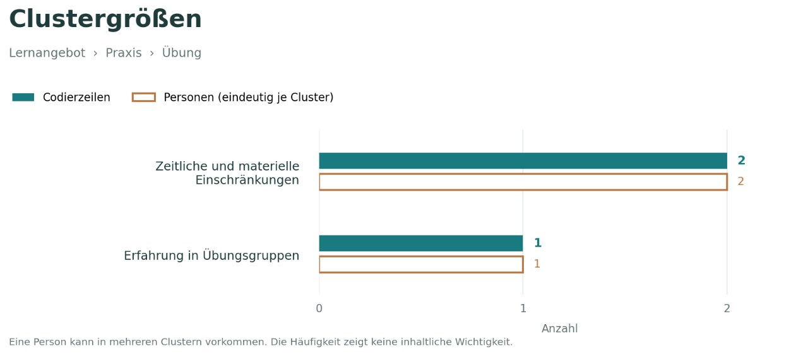
Der HTML-Bericht ergänzt bei vorhandenen Clusterergebnissen Personen und Kategorien. Eine Zahl öffnet die zugehörigen Textbelege; das Suchfeld filtert vollständige Codepfade. Liegt eine Prüfliste vor, zeigt Prüfbedarf im Modellergebnis die Fallklassen. Dieser gespeicherte Stand zeigt nicht den späteren Fortschritt deiner manuellen Prüfung. Dessen aktueller Stand steht weiterhin bei Codierungen im Projekt prüfen.
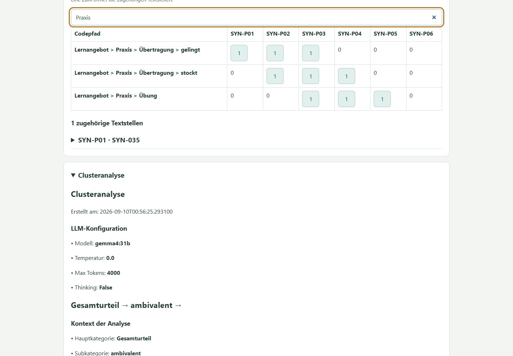
9. Codierungen prüfen und Rückmeldung geben
Wenn das Modul Prüfliste ausgeführt wurde, unter Ergebnisse → Codierungen im Projekt prüfen öffnen. Die kritischen Fälle sind zunächst gefiltert. Suche und Seitennavigation helfen bei größeren Listen.
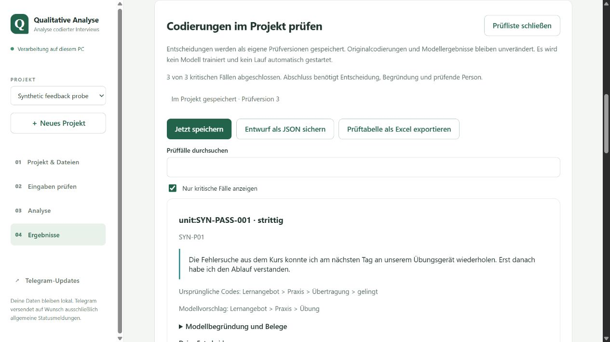
Pro Fall die Originalstelle, menschliche Codes und Modellvorschläge lesen. Entscheidung, finale Codes und gegebenenfalls Begründung eintragen. Die Anwendung speichert Entscheidungen lokal als Prüfversionen. Den Speicherstatus beachten; Jetzt speichern ist zusätzlich möglich. Bei einem Speicherfehler die Meldung beheben und den Entwurf als JSON sichern. Prüftabelle als Excel exportieren bietet eine lesbare Arbeits-/Dokumentationsfassung; sie ist kein automatischer MAXQDA-Rückimport.
Die herunterladbare HTML-Prüfliste ist eine separate Offline-Variante. Dortige Änderungen sind nicht automatisch mit dem Projekt synchronisiert. Für die integrierten Folgeläufe die Prüfung innerhalb der Oberfläche verwenden.
10. Mit Entscheidungen weiterarbeiten
Nach Abschluss der kritischen Prüfungen bietet die Oberfläche an, mit geprüften Codierungen einen neuen Lauf vorzubereiten. Zuerst erscheint eine Vorschau der tatsächlichen Änderungen. Fälle ohne finale Codes müssen gegebenenfalls ausdrücklich aus der neuen codierten Eingabe ausgeschlossen werden.
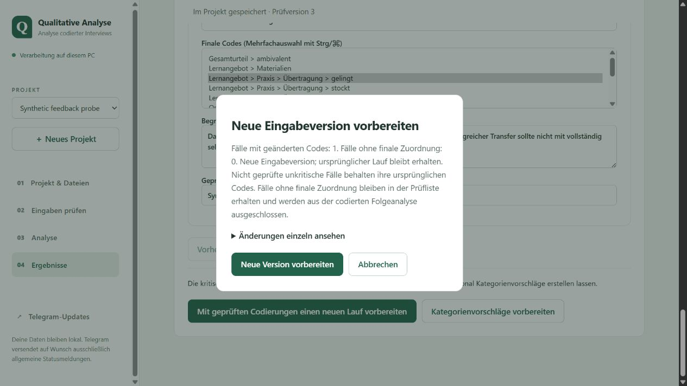
Neue Version vorbereiten erstellt eine neue Eingabeversion und bewahrt Ursprungslauf und Originalcodierungen. Danach die Module prüfen und den neuen Lauf bewusst starten. Deine Entscheidungen ändern die Codierungen der neuen Eingabe; sie trainieren das Modell nicht. Das LLM sieht die korrigierte Grundlage erst bei diesem erneuten Lauf.
Kategorienvorschläge vorbereiten ist eine zweite, optionale Funktion. Ein gesonderter Modelllauf verwendet Originalstellen, abgeschlossene Entscheidungen und das bisherige Kategoriensystem. Er schlägt mögliche Definitionsergänzungen, Trennungen oder Zusammenfassungen vor. Nichts davon wird automatisch übernommen. Prüfe die Vorschläge fachlich, bearbeite eine neue Version deiner Kategorientabelle und vergleiche sie anschließend unter Eingaben prüfen.
11. Telegram-Updates einrichten
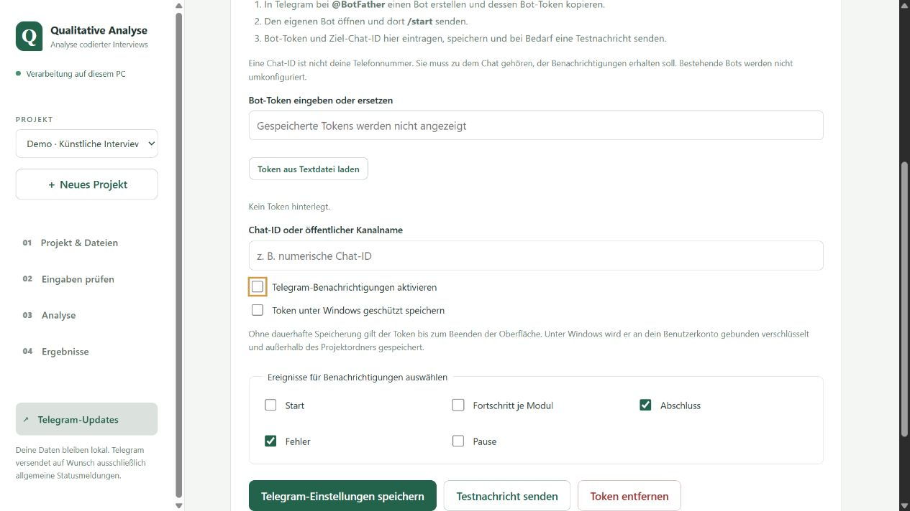
Telegram ist optional. Der Browser zeigt den Fortschritt auch ohne Bot. Bei Telegram-Updates einen Bot-Token eingeben oder aus einer Textdatei laden, die Ziel-Chat-ID eintragen, Ereignisse auswählen und speichern. Der Bot muss zuvor im eigenen Telegram-Chat mit /start angesprochen worden sein. Die Chat-ID ist nicht die Telefonnummer.
Ein leeres Tokenfeld behält den gespeicherten Token. Eine neue Eingabe ersetzt ihn beim Speichern; Token entfernen deaktiviert Benachrichtigungen. Unter Windows kann der Token benutzergebunden verschlüsselt gespeichert werden; sonst gilt er nur für die Sitzung. Die Testnachricht wird erst durch den entsprechenden Knopf versendet. Telegram erhält allgemeine Statusmeldungen, keine Interviewtexte, Codes, Projektnamen oder Dateipfade.
12. Aufbewahren, teilen und Probleme lösen
Die Oberfläche speichert Projekte normalerweise im Ordner local_app_data beim Programm; ein über --data-dir gewählter Speicherort kann davon abweichen. Für eine Sicherung die Anwendung nach Ende aller Läufe schließen und den vollständigen Datenordner sichern. Einzelne Ergebnisdateien enthalten nicht alle Eingabe- und Prüfversionen. Das Löschen von Programm-/Projektordnern entfernt möglicherweise gespeicherte Arbeit.
| Situation | Nächster Schritt |
|---|---|
| Oberfläche nicht erreichbar | Startdatei erneut öffnen; den frisch geöffneten Link verwenden. |
| XLSX abgewiesen | Datenblatt, Kopfzeile, Dateigröße und Formeln prüfen; alte XLS als XLSX speichern. |
| Code unbekannt | Vollständigen Pfad einschließlich aller Ebenen und Schreibweise mit dem Kategoriensystem vergleichen. |
| Passage-IDs fehlen | Assistent mit MAXQDA-Positionsspalten verwenden oder Zeilenvergleich wählen. |
| Gleiche Passage-ID mit abweichendem Text | Gruppierung im Export korrigieren; überlappende Ausschnitte nicht künstlich gleichsetzen. |
| Ollama nicht erreichbar | Ollama starten, Systemprüfung ausführen und installierten Modellnamen prüfen. |
| Lauf fehlgeschlagen | Laufprotokoll speichern und Fehlermeldung prüfen; nach Behebung fortsetzen oder neuen Lauf starten. |
| Gesamtbericht fehlt | Status prüfen: HTML entsteht nach erfolgreichem Abschluss; ältere Läufe gegebenenfalls nacherstellen. |
| Bild fehlt im HTML | Hinweis im Bericht lesen und einzelne Grafik öffnen; Exportgrenzen bzw. fehlende Datei prüfen. |
Vor dem Teilen HTML, Excel und Berichte auf enthaltene Originaltexte und Beurteilungen prüfen. Die HTML-Datei enthält die eingebetteten Daten selbst. Reale Studienunterlagen, private Konfigurationen und Schlüssel gehören nicht in ein öffentliches GitHub-Repository. Weitere technische Details: Bedienoberfläche, Erweiterungen und Versionshinweise.